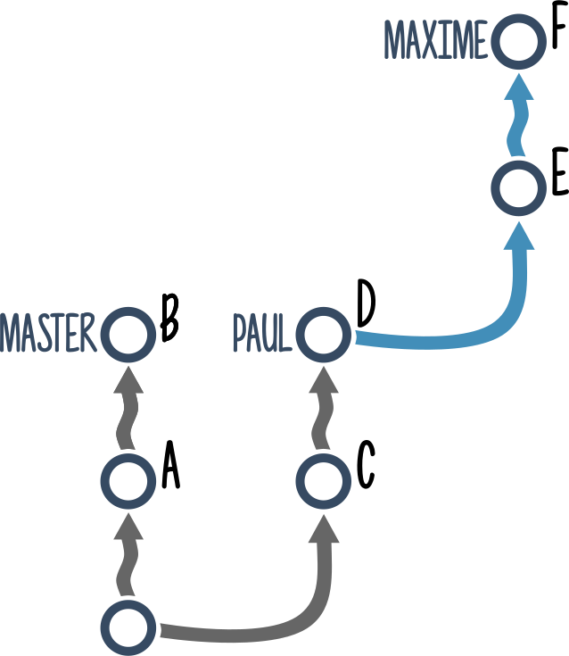
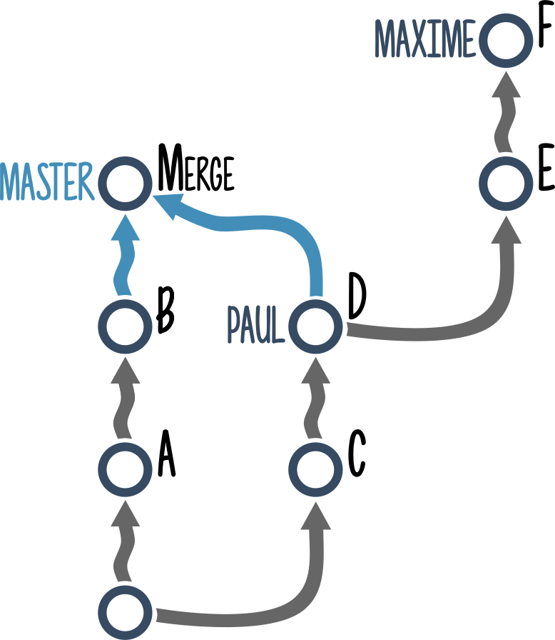
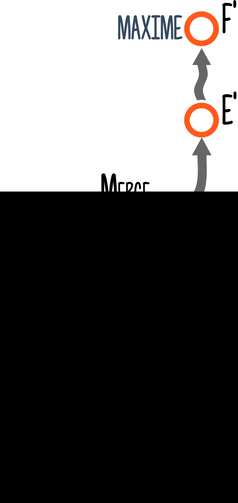

Git Dammit!
Appuyez sur N pour afficher les notes
 @mghignet
@mghignet
TDM/s
T'as deux minutes ?
-

- Fabrice
-

- Aurore
-
- Maxime


- Ça ne permet pas de s'y retrouver
- La revue de code est plus difficile
- Les projets Open source le requièrent
- Des outils existent pour générer des changelogs

- On tire une branche
- On fait un ou plusieurs commits
- On soumet sa branche à une revue de code


T'as oublié un point virgule dans ton dernier commit.
Fabrice
- git add, puis...
-
# Le contenu et le nom git commit --amend -
# Le contenu seulement git commit --amend --no-edit

-
# Bien entendu il faudra « force push » git push -f origin ma-branche
-
Ce serait pas une faute d'orthographe ça ?Aurore
-
(C'est "Tuning", pas "Tunning")

-
Deux étapes
-
1. Créer un commit
-
de FIXUP
-
git commit --fixup A 
-
2. Réécrire l'historique
-
REBASE


-
git rebase -i A~ --autosquash - -i : mode interactif
- A~ : le parent de A
- --autosquash : placer le commit de fixup au bon endroit

-
# Ou un alias git dans mon .gitconfig [alias] fixup = !sh -c 'SHA=$(git rev-parse $1) \ && git commit --fixup $SHA \ && git rebase -i --autosquash $SHA~' - # Utilisation : git fixup {sha1}
-
# Encore une fois... git push -f origin ma-branche
Oups ! J'ai modifié mes commits, et puis j'ai fait un pull.
Je me retrouve avec des commits en double :(


-
# Il fallait « force push »… git push -f origin ma-branche
-
Il me semble qu'on avait dit qu'on ne développait plus les roues bleues ?Aurore.


-
# On garde les modifs, indexées git reset HEAD~ --soft -
# On garde toujours les modifs mais non indexées git reset HEAD~ --mixed git reset HEAD~ -
# On supprime toutes les modifs git reset HEAD~ --hard
J'ai tout cassé !
Comment je reviens à la version du repository distant ?

Pull ? Fetch ?

-
git pull origin master -
git fetch origin master git merge master
-
git fetch origin feature1 git reset --hard origin/feature1
-
# A placer dans le .gitconfig [alias] dammit = !BRANCH=$(git rev-parse --abbrev-ref HEAD) \ && git fetch origin $BRANCH \ && git reset --hard origin/$BRANCH # Utilisation : git dammit
-
Ok pour les modifs, mais tu t'es basé sur ma branche, pas sur master !Fabrice
- 
- 

- 
-
-
# On n'oublie pas le ~ tilde ~ ! git rebase E~ --onto master - E~ : On réécrit à partir de E
- --onto master : Au dessus de master
-


Quelques Astuces à emporter...
Comment voir les modifications en cours ?
-
# Modifications non indexées git diff -
# Modifications indexées git diff --cached git diff --staged -
# Toutes les modifications git diff HEAD -
# Les modifications entre deux commits / branches git diff ab0f..89df git diff ab0f..master git diff ab0f..HEAD
Je veux séparer les modifications d'un même fichier dans deux commits différents.
-
# pour indexer des modifications git add -p -
# Dans l'autre sens git reset -p
Je veux revenir sur la branche sur laquelle j'étais juste avant.
-
# Comme "cd -" en shell ! git checkout -
Je veux annuler les modifications faites sur un fichier en particulier.
-
# Cette méthode a des défauts... git checkout monFichier.ext -
# Tout ce qui suit le "--" # est considéré comme un nom de fichier git checkout -- monFichier.ext
Merci !
mghignet.github.io/git-dammit-talk/
@mghignet